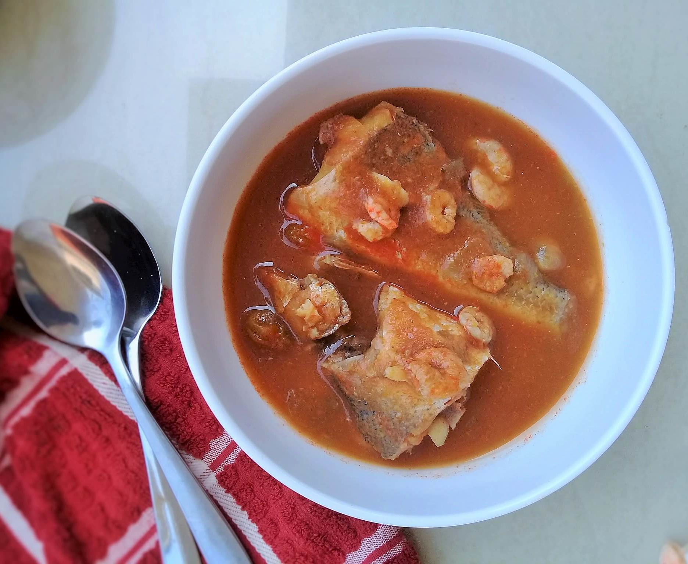

Ghanaian Light Soup

Light Soup is a local indigenous soup of the GaDangme(or Ga) people of the Greater Accra Region of Ghana. Originally formulated as a 'Tomatoes-Base Sea Fish Light Soup' called 'Aklo(or Aklor)' for fishermen at the coast of Accra, but over the course of time it evolved into a soup prepared with both 'fish and goat-meat', or 'fish and lamb-meat', or 'fish and beef', or 'exclusively the meat of the livestock of choice', and of which the GaDangmes(or Gas) call 'Toolo Wonu', but their neighbouring 'Akans' call 'Aponkye Nkrakra'.
Ingredients
- 2 ripe garden eggs (orange colour)
- 1 tablespoon turkey berries
- 3 medium tomatoes
- 1 1/2 medium onions
- petite belle pepper or scotch bonnet pepper or green chilli as required
- 1 inch ginger
- 1-2 cloves garlic
- salted beef (optional)
- 1/2 medium onion (from the earlier one) chopped
- 1 pound fleshy fish descaled and gutted, bones intact
- 1/2 cup about 100g peeled and deveined shrimps optional
- 1 teaspoon each grounded shrimp and fish sunstitute for shrimp stock cube
Steps
- Put garden eggs, turkey berries, tomatoes, onion, and petite belle pepper or scotch bonnet pepper in a saucepan. Add water and bring to a boil. Boil for eight to ten minutes or till the garden eggs is cooked through.
- Cool for a few minutes, pour into a blender, reserving the water, add ginger and garlic and blend. If you prefer a very smooth soup, use a colander to strain the blended mixture and set aside.
- In a saucepan, add chopped onions and salted beef if using. Add a splash of water and set on fire for a minute or to for the beef to omit it's juices. Add the blended mixture, reserved water and water as needed and bring to a boil.
- Whiles boiling, liberally season fish and shrimps with salt. Add to the boiling soup, add grounded shrimp and fish and cook for about 10 to 15 minutes till the fish is cooked through. Taste and add salt if needed. Serve as appetiser with garlic bread or as main with fufu or rice.
Recipe Notes
You can make this soup without garden eggs and turkey berries, boil the tomatoes with onions and pepper and continue with the process. Alternatively, you can replace vegetable stock with water. Add just enough vegetable stock as you will need depending on how light you want the soup.